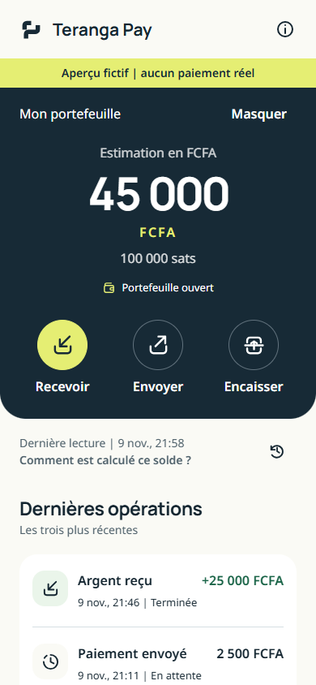
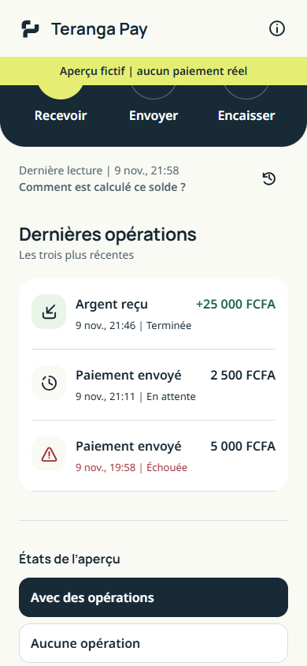
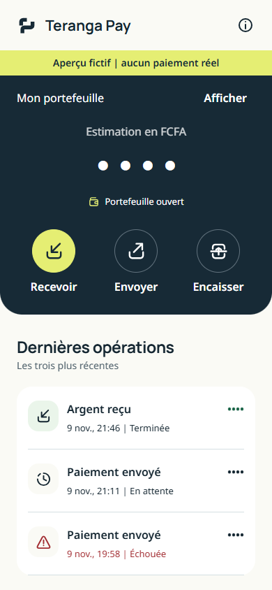
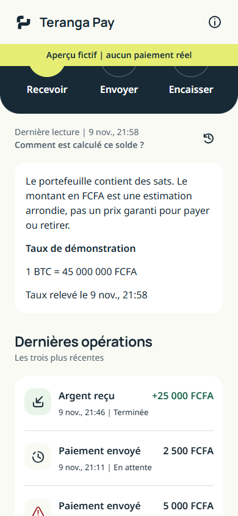
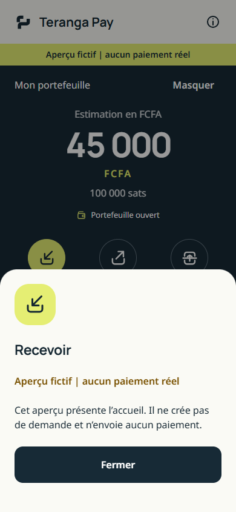
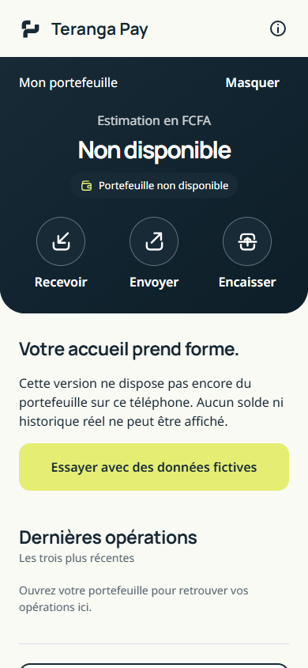
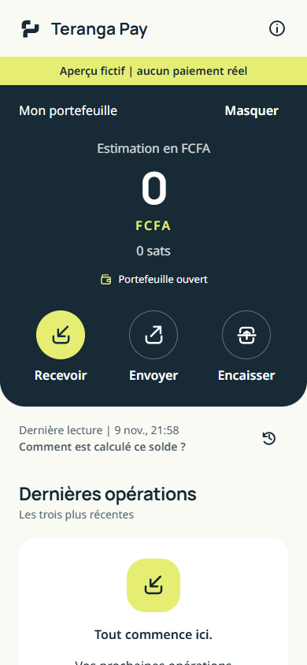
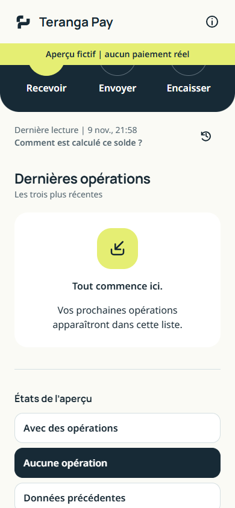
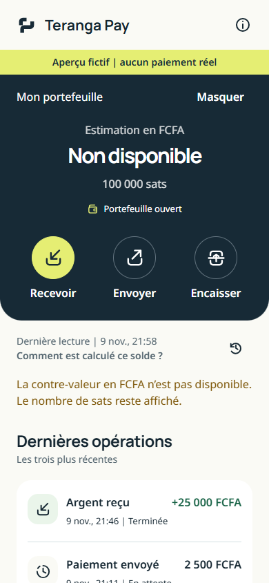
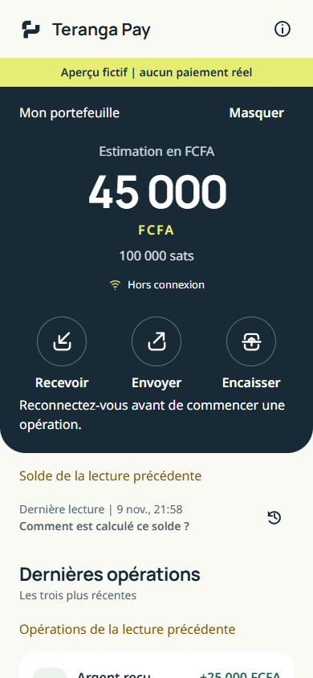
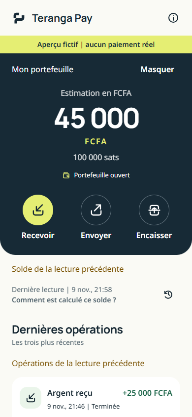
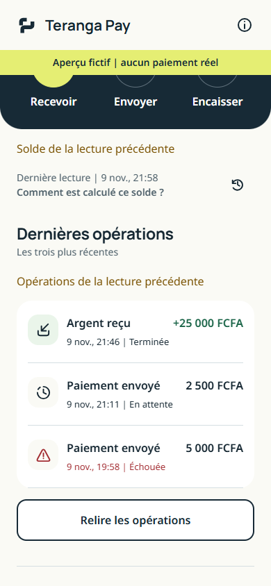
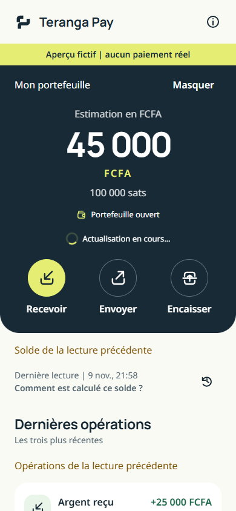
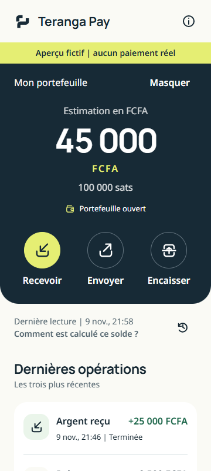
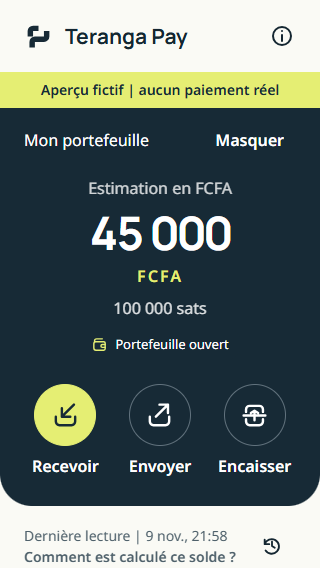
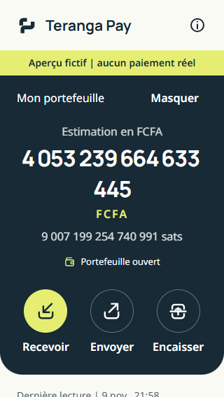
Projet de Salam et PAN. Captures des composants React Native réels, rendus dans Edge le 9 novembre 2026. Cliquer sur une image ouvre sa taille originale.
Le montant FCFA passe au premier plan. Les sats restent lisibles, les trois actions sont nommées et les opérations distinguent réussite, attente et échec. L’aperçu utilise des données fictives : il ne crée ni portefeuille ni paiement. L’entrée normale explique l’absence de wallet branché.
PAN a confirmé les écrans le 9 novembre 2026 avant commit et PR. Pour
essayer les écrans, lancer npm run mobile:web -- --offline --port 8092, puis
ouvrir l’aperçu local. Choisir « Découvrir le projet »,
puis « Essayer l’accueil fictif ».















